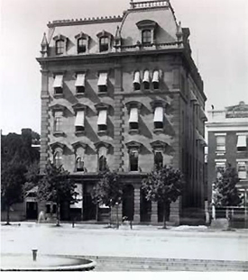

|
Also known as the Freedman's Saving and Trust Company, the Freedman's
Saving Bank was chartered as a private corporation in March of 1865. The
Bank was the first financial institution specifically meant for the
savings of recently enslaved African Americans. The mutual savings bank
was undertaken with a dual mission of providing financial stability for
freedpeople and inculcating the middle class habits needed for them to
|

The Freedman's Saving Bank
|
succeed in a system of free labor. As such, many prominent African
Americans and their supporters in Congress welcomed the bank and its
educative agenda. Henry Wilson, vice president of the United States
under Ulysses S. Grant, remarked enthusiastically that the hard earned
dollars of freed men and women were "just as safe there as if it were in
the Treasury of the United States."
Headquartered in Washington D.C., the Freedman's Saving Bank opened
thirty-seven branches throughout the South. Each office employed
African-American tellers and appointed leaders of the local community to
branch advisory boards. The bank worked hand in hand with other
respected black institutions, such as the Freedman's Bureau and
churches, to encourage customers to use its services. Newspaper
advertisements often prominently featured Abraham Lincoln in the
background, giving the distinct impression of government endorsement.
John W. Alvord, president of the Bank, presided over a conservative
institution that received depositors' money and invested in government
securities, but did not make any loans. This sensible policy won the
respect, and the business of one hundred thousand customers and assets
of four million dollars. Deposits ranged anywhere from a few pennies to
around fifty dollars, but all were welcomed. In addition to individual
deposits, many African-American organizations eagerly put their
treasuries into the bank.
In 1870, Congress to amended the bank's charter to allow speculative
investments and loans. Unfortunately, a combination of bad investments,
corrupt practices, and the effects of the Panic of 1873 led to financial
insolvency. In 1875, the Freedman's Savings Bank closed its doors
forever. Attempts made by friends of the bank failed to secure full
financial restitution to investors. "I pray you to consider us old
People," wrote one former customer, "our best life spent in Slavery...Just
asking for what we worked for." The failure of the Freedman's Bank, and
the inability of former slaves to regain their deposits, explained why
many African Americans distrusted financial institutions for decades
afterwards.
Source: Joan Waugh, ed., Facts on File Encyclopedia of American
History: Civil War and Reconstruction, 1856 to 1869 (New York: Facts on
File, 2003), 141-42.
|